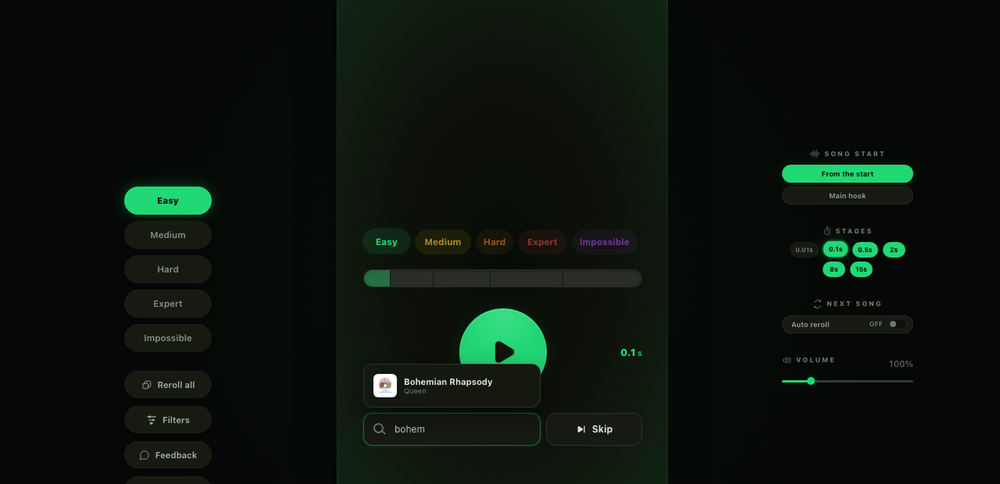

Songless
Song-guessing game · 100k+ visits
My version of Songless: you hear the first 0.01 seconds of a song and try to name it, and each skip plays a bit more, up to 15 seconds. There are 804 songs across five difficulties. Behind it is a pipeline that pulls each track, checks it's the right version with an audible opening, and uploads the clips to Cloudflare R2.
React, TypeScript, Vite, Cloudflare R2